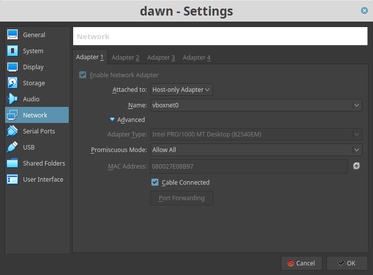
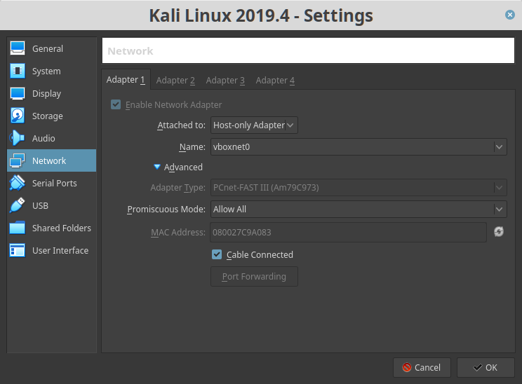
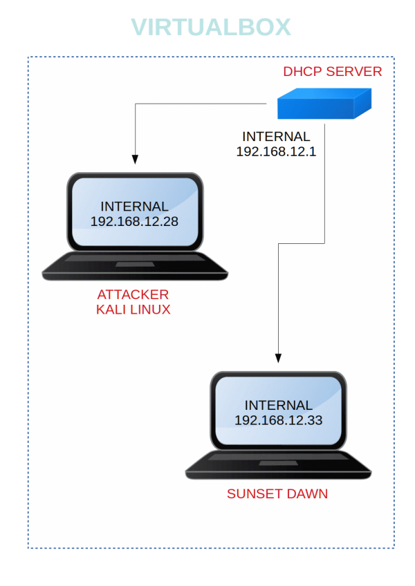

Sunset Dawn
▸ 1. Scan Network
▸ 2. Finding Services and Ports
▸ 3. Enumeration
▸ 3.1 Port 80
▸ 3.2 Enumerate directory
▸ 3.3 Enumerate SMB
▸ 4. Exploitation
▸ 4.1 SMBCLIENT
▸ 4.2 Get a session
▸ 5. Privilege Escalation
Difficulty: Intermediate
Flag: Boot to root.
Learning: Network scanning | Enumeration | Exploitation | Privilege Escalation
Download (Mirror): https://download.vulnhub.com/sunset/dawn.zip
Download (Torrent): https://download.vulnhub.com/sunset/dawn.zip.torrent
Install the machine on VirtualBox:
1. Download the file and extract it.
2. On Virtualbox choose File->Import Appliance.
3. Select the file “ova”.
4. Accept to import.
Virtual Machine Network Settings


Watch your Machine IP.

Diagram
 Index
Index